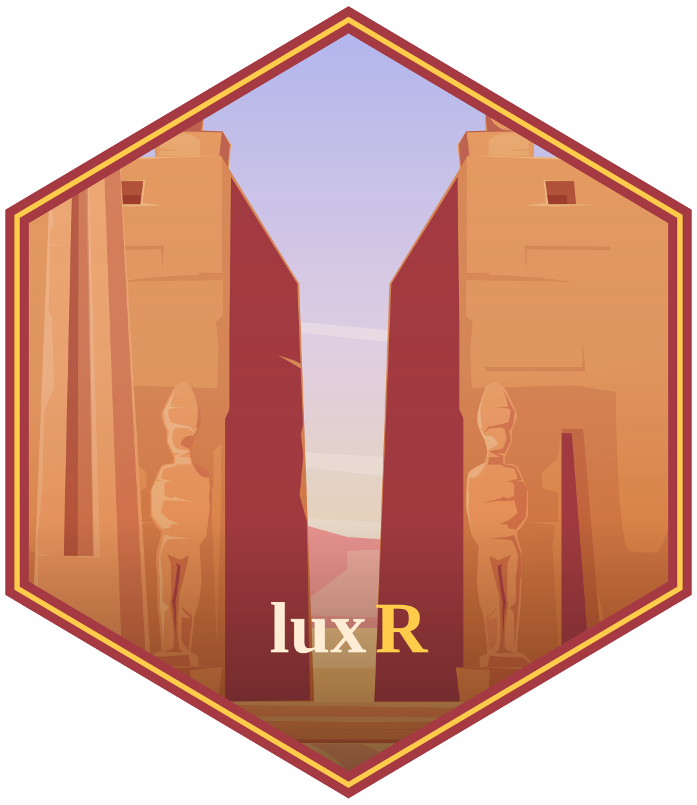

R package for photic exposure and light-timing/regularity metrics in circadian and chronobiology research.


📖 What is luxR?
luxR processes ambient light exposure data collected from wrist-worn actigraphy devices — Axivity AX3/AX6 and ActTrust — in the context of circadian and chronobiology research. It provides a pipeline for photic exposure metrics (how much light, how bright) and light timing/regularity metrics (when light happens, how consistent that timing is day to day), designed to sit alongside actigraphy- and sleep-derived circadian metrics from the wider Circadia Lab ecosystem.
✨ Features
- 📊 Exposure metrics — mean/median illuminance, time above threshold (TAT), cumulative photic history, melanopic EDI approximation
- ⏰ Timing & regularity metrics — light onset/offset detection, mean light timing, and a Light Regularity Index (LRI) analogous to sleep regularity indices
- 📈 Visualisation — actogram-style plotting for visual QC of light exposure patterns
- 🔌 Device-agnostic — built to accept light channel data from Axivity (via
axR/zeitR::read_axivity()) and ActTrust alike
🚧 Status
luxR is under active early development. The data structures (light_trace(), validate_light_trace()) are implemented; the metric and visualisation functions are scaffolded with full documentation but currently raise "Not yet implemented" while the underlying algorithms are built out and validated. See NEWS.md for what’s landed so far.
🗂️ Project Structure
luxR/
├── R/
│ ├── constructors.R # light_trace(), validate_light_trace()
│ ├── exposure-metrics.R # compute_mean_light, compute_tat, compute_photic_history, compute_melanopic_edi
│ ├── regularity-metrics.R # compute_lri, compute_light_midpoint
│ ├── onset-offset.R # find_light_onset, find_light_offset
│ ├── plot-actogram.R # plot_light_actogram
│ └── luxR-package.R
├── man/ # roxygen-generated documentation + hex logo
├── tests/testthat/ # unit tests
├── dev/ # real-data smoke tests (not part of the formal suite)
├── inst/COPYRIGHTS # per-function provenance/validation notes
└── _pkgdown.yml🚀 Getting Started
Installation
luxR isn’t published yet. Install the development version from GitHub:
# install.packages("remotes")
remotes::install_github("circadia-bio/luxR")Once published, it will be available from the Circadia Lab r-universe:
install.packages("luxR", repos = "https://circadia-bio.r-universe.dev")Basic usage
library(luxR)
trace <- light_trace(time = your_timestamps, lux = your_lux_values, device = "axivity")
print(trace)📦 Dependencies
| Package | Version | Purpose |
|---|---|---|
| R | >= 4.1.0 | Runtime |
| testthat | >= 3.0.0 | Unit testing (Suggests) |
| ggplot2 | any | Actogram plotting (Suggests) |
👥 Authors
| Role | Name | Affiliation |
|---|---|---|
| Author, maintainer | Lucas França | Circadia Lab, Northumbria University |
| Author | Mario Leocadio-Miguel | Circadia Lab, Northumbria University |
🤝 Related Tools
- ⏱️ zeitR — wrist actigraphy, sleep staging, and circadian metrics
- 📡 axR — Axivity AX3/AX6 import and device control
- 😴 hypnoR — hypnogram analysis and sleep architecture
- 🍬 sugaR — continuous glucose monitoring analysis
- 🔗 syncR — unified participant database
- 🔬 circadia-bio — the Circadia Lab GitHub organisation